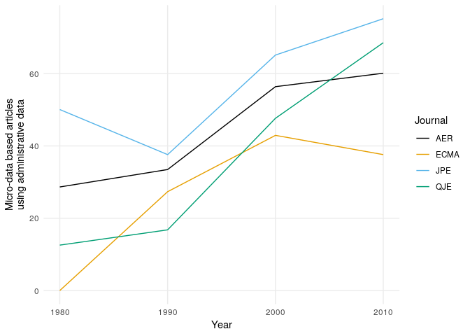

Use of Administrative Data
clone-chetty-use-admin-data
A scan of the data behind the Chetty (2012) figure
Source
Raj Chetty. 2012. “Time Trends in the Use of Administrative Data for Empirical Research.” presented at the NBER Summer Institute. http://www.rajchetty.com/chettyfiles/admin_data_trends.pdf.
The Figure

the graph
The Data
- chetty1_datasets.csv: Data as created by WebPlot Digitizer on 2018-07-19.
- chetty1_increase_admin.csv: Reformatted
- chetty1_increase_admin.xlsx: Reformatting tool
Data is at https://github.com/larsvilhuber/clone-chetty-use-admin-data, but we need the raw URL.
raw_url <- "https://raw.githubusercontent.com/larsvilhuber/clone-chetty-use-admin-data/master/chetty1_increase_admin.csv"
chetty <- read.csv(raw_url,header=TRUE)Tools
I converted the graph using https://apps.automeris.io/wpd/
Converting data to ggplot favorite
chetty2 <- gather(chetty,Journal,adminpct,AER,JPE,QJE,ECMA,-Year)Plot the data
g <- ggplot(chetty2,aes(Year,adminpct,color=Journal)) +
geom_line() +
theme_minimal() +
theme(panel.grid.minor = element_blank()) +
scale_colour_manual(values=cbbPalette) +
ylab("Micro-data based articles\nusing administrative data")
g
## Export the graph
dev.print(png,filename = "chetty_figure2.png",bg="transparent",width = 600, height=400, units = "px")## png
## 2Disclaimer
All errors are mine. Raj Chetty is the original creator.